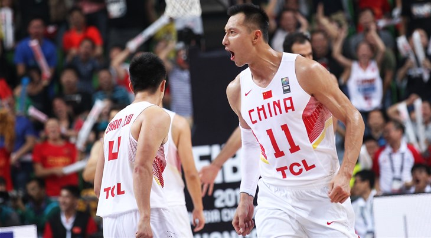
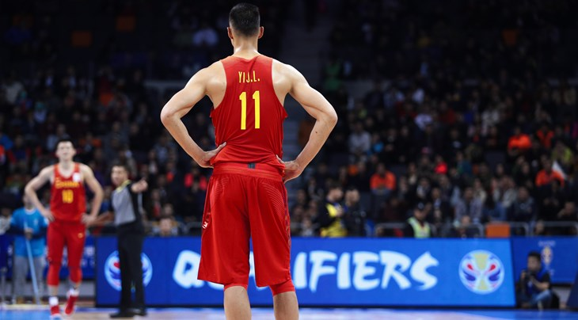

易建聯
易建聯
中國球員，廣東宏遠隊，主打前鋒


在中國籃球運動的發展史上，第一個想到的人物絕對是移動長城姚明，不管是在NBA休士頓火箭隊，或是身穿國家隊的戰袍，他在球場上都有著無與倫比的貢獻和影響力。然而疲勞過度造成姚明不斷地受傷，才32歲便宣布退休，而中國男籃的支柱也從他身上，薪火相傳至本文的主角—易建聯的肩上。
1984年出身的易建聯（有一說為1987年出身）身高211公分，從小即展現傲人天賦，18歲加入職業球隊、20歲便入選國家代表隊，前途一片光明。接著他幫助廣東宏遠隊拿下三連霸，並連續三年都獲選為總決賽最有價值球員，其中他在2005年更成為CBA史上最年輕的最有價值球員，這樣的輝煌經歷，加上先天的身材條件，也讓諸多NBA球隊都對他的天分垂涎三尺。
因此易建聯在2007年決定參加NBA選秀，並在首輪第六順位被密爾瓦基公鹿隊選中，成為史上選秀順位第二高的亞洲選手。然而他在NBA因傷打打停停，最多出賽的一年是新秀賽季的66場，也證明亞洲人的體格要挑戰世界籃球殿堂確實不容易。最後只在NBA待了五個球季便黯然離開，總共出賽272場，留下平均7.9分4.9籃板的數據，也替亞洲球員挑戰NBA之路留下遺憾。
離開NBA之後易建聯返回中國CBA聯賽打球，並持續效力於廣東宏遠隊。至今8個賽季，場均貢獻24.2分、抓下10.7個籃板，持續宰治整個中國籃壇。或許是因為年紀的關係，他本季平均出賽時間只有28.1分鐘，不過仍很有效率的貢獻21.1分，搭配廣東隊的強力外援，例行賽拿下CBA最佳的42勝4負，有望替個人籃球生涯再添一座獎盃。
但易建聯最為人稱道的還是他在國家隊的表現，自從2008年北京奧運接下老大哥姚明傳承的棒子之後，他便成為中國國家隊無法動搖的支柱。他首先在2010籃球世錦賽率領中國闖入16強，該屆賽會他平均攻得20.2分，並抓下賽事平均最高的10.2籃板。接著在隔年的的武漢籃球亞錦賽，易建聯又以平均16.5分10.8籃板榮膺賽會MVP，幫助地主中國留下冠軍，還順利取得2012年倫敦奧運會籃球項目的參賽資格。
2013年男籃亞錦賽易建聯仍是全隊最穩定的球員，然而隊友們表現失常，意外導致中國隊在8強賽慘遭滑鐵盧，被中華隊以96：78狠狠地教訓一番，也使得中國隊首次缺席了籃球世界盃。賽後易建聯摀著毛巾呆坐在板凳席久久沒有離開，無法接受球隊落敗的事實；國家隊老將王治郅受訪時也語重心長的說：「中國籃球真的到了需要改變的時候，我希望籃協可以好好反省我們的問題所在。」
這年的失利讓全中國上下罵聲連連，不過很快地他們又在易建聯的帶領之下重新振作起來。2015籃球亞錦賽中國隊拿下隊史第16度冠軍，易建聯再度獲頒賽會最有價值球員，他在賽後接受記者採訪時說：「我的感受完全不一樣，在這一屆亞錦賽中，我感覺很自豪，隊友們從頭到尾都很出色，我特別自豪，也特別感動。」
2019籃球世界盃將在中國舉行，身為中國男籃的門面，易建聯也相當重視這次穿上國家隊球衣的機會，他在剛落幕的抽籤儀式上表示，他們必須趁CBA聯賽結束後的短時間內迅速磨合，沉下心好好訓練，「希望我會以最好的狀態、最好的精神面貌，跟全隊一起努力備戰好這次的男籃世界盃。」屆時就看這位中國隊現役最強球員，如何帶領一票新生代選手，在自己的鄉親父老面前大顯身手。
Top